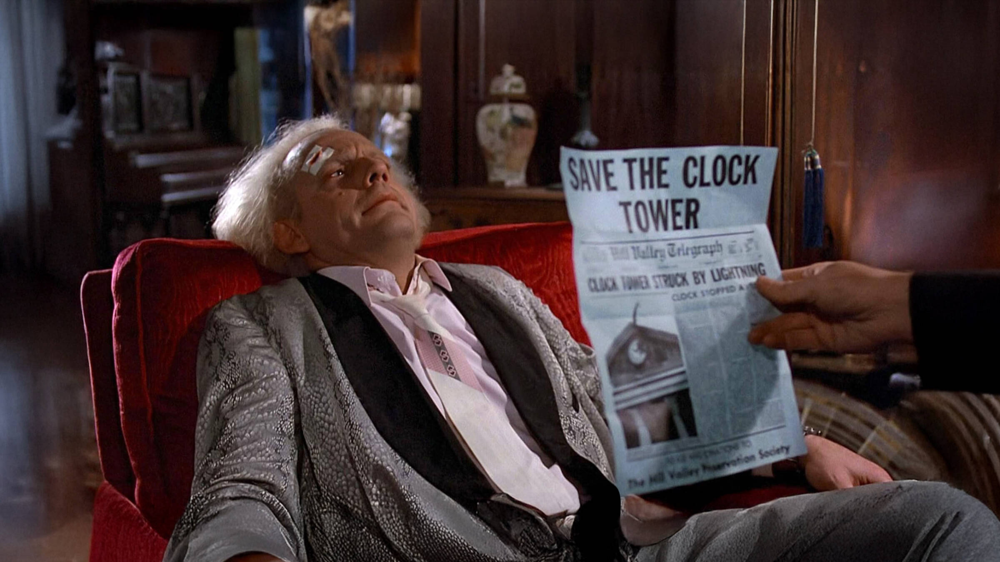

Fase 1: Preparazione e Visione Attiva
Scrivere un'analisi non significa dire "mi è piaciuto". Il primo passo è la visione attiva. Devi guardare il film più volte: la prima per goderti la storia, la seconda e la terza per prendere appunti tecnici.
Concentrati su un tema o una domanda specifica: Come viene usata la luce per mostrare la solitudine del protagonista? Perché il montaggio accelera in questa scena? Scegliere una "tesi" ti aiuterà a non perderti in descrizioni generiche.
